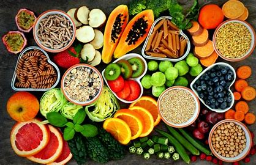

.jpg)
.jpg)
Food Resource Production refers to the processes and activities involved in the creation, cultivation, and harvesting of food resources to meet the needs of human populations. This includes the production of food from natural resources, agricultural activities, and food systems that involve farming, fishing, hunting, and other means of sourcing food.
Here are the key components of food resource production:
1. Agriculture
This is the largest source of food production and involves the cultivation of crops (like grains, vegetables, fruits, and legumes) and the raising of livestock (such as cattle, poultry, sheep, and pigs). It encompasses:
Crop farming: Growing plants for human consumption, including grains (wheat, rice, corn), vegetables, fruits, and other foodstuffs.
Livestock farming: Rearing animals for meat, dairy, eggs, and other animal-based products.
Aquaculture: The farming of aquatic species like fish, shellfish, and seaweed.
2. Fishing and Marine Resources
Wild-caught seafood from oceans, lakes, and rivers also forms a significant part of food resource production. This includes both commercial fishing and sustainable harvesting of marine and freshwater organisms.
3. Forestry
Forests contribute food resources in the form of fruits, nuts, mushrooms, and other edible plants, along with honey and game from wildlife. Forests can also provide vital ecosystem services for agricultural production.
4. Food Processing
After food is harvested, it often undergoes processing to extend shelf life, improve taste, or convert raw materials into consumable forms. This includes activities like:
Canning, drying, and freezing to preserve perishable foods.
Milling (e.g., turning wheat into flour).
Fermentation (e.g., making yogurt or beer).
5. Technology and Innovations
Advances in agricultural practices, biotechnology, and food engineering have led to increased food production. For instance, genetically modified organisms (GMOs) can lead to higher yields or resistance to pests. Vertical farming and hydroponics are emerging techniques that optimize food production in urban settings.
Health Benefits
Access to Nutritious Food: Efficient food production systems ensure that a variety of nutritious foods are available to the population. This can help reduce hunger and malnutrition and improve public health.
Diverse Diets: By producing a wide range of foods, communities can access diverse diets rich in vitamins, minerals, and other essential nutrients. This is particularly important in regions where food variety might be limited.
Food Security: Local and sustainable food production enhances food security, ensuring that communities are not overly reliant on imports or global supply chains that may be vulnerable to disruptions.
Environmental Benefits
Sustainable Practices: Sustainable food production methods, such as agroecology, organic farming, and precision agriculture, help preserve natural resources (soil, water, biodiversity) and reduce the negative impacts of conventional farming (e.g., pesticide use, deforestation).
Carbon Sequestration: Certain types of food production, especially regenerative agriculture, can play a role in capturing and storing carbon in the soil, helping mitigate climate change.
Biodiversity Preservation: By promoting diverse farming systems (e.g., crop rotations, agroforestry), food production can support biodiversity and protect ecosystems.
1.Arable Land: Land suitable for growing crops.
2.Soil Quality: The fertility and health of the soil, including nutrients, pH, and structure.
3.Soil Conservation: Practices like crop rotation, terracing, and cover cropping to maintain soil health and prevent erosion.
1.Irrigation: Systems for supplying water to crops, especially in regions with irregular rainfall.
2.Water Management: Ensuring sustainable and efficient use of water resources for agriculture.
3.Rainwater Harvesting: Collecting and storing rainwater for agricultural use.
1.Temperature: Affects plant growth and the types of crops that can be grown.
2.Precipitation: The amount and timing of rainfall can impact crop yields.
3.Seasonality: The length of growing seasons, which affects planting and harvesting times.
4,Climate Change: Long-term shifts in weather patterns that can impact crop viability and food security.
Despite their importance, FRP faces several challenges:
1.Unpredictable weather patterns: Changes in temperature, rainfall, and extreme weather events (e.g., floods, droughts, heatwaves) can disrupt crop cycles, reduce yields, and damage infrastructure.
2.Rising temperatures: Heat stress can negatively affect crop growth and reduce productivity, especially for temperature-sensitive crops like wheat, corn, and rice.
3.Water scarcity: Many agricultural regions are facing water shortages due to changing precipitation patterns and over-extraction of groundwater, which affects irrigation-dependent farming.
1.Soil erosion: Unsustainable farming practices like overgrazing, deforestation, and monoculture lead to the depletion of soil nutrients and the erosion of topsoil, which reduces agricultural productivity.
2.Desertification: Overuse of land, deforestation, and improper irrigation can lead to desertification, turning once-fertile land into barren, unproductive desert.
3.Soil fertility decline: Continuous farming without proper soil management (e.g., crop rotation, use of organic fertilizers) can lead to the exhaustion of essential nutrients in the soil.
1.Agriculture is one of the largest consumers of water globally. With growing populations and increased agricultural demands, water scarcity is becoming a significant barrier to sustainable food production.
2.Inefficient irrigation practices: Many regions rely on outdated or inefficient irrigation systems that waste large amounts of water, further exacerbating the problem.
WebSite
Reserch and content
Final Report and conclusion